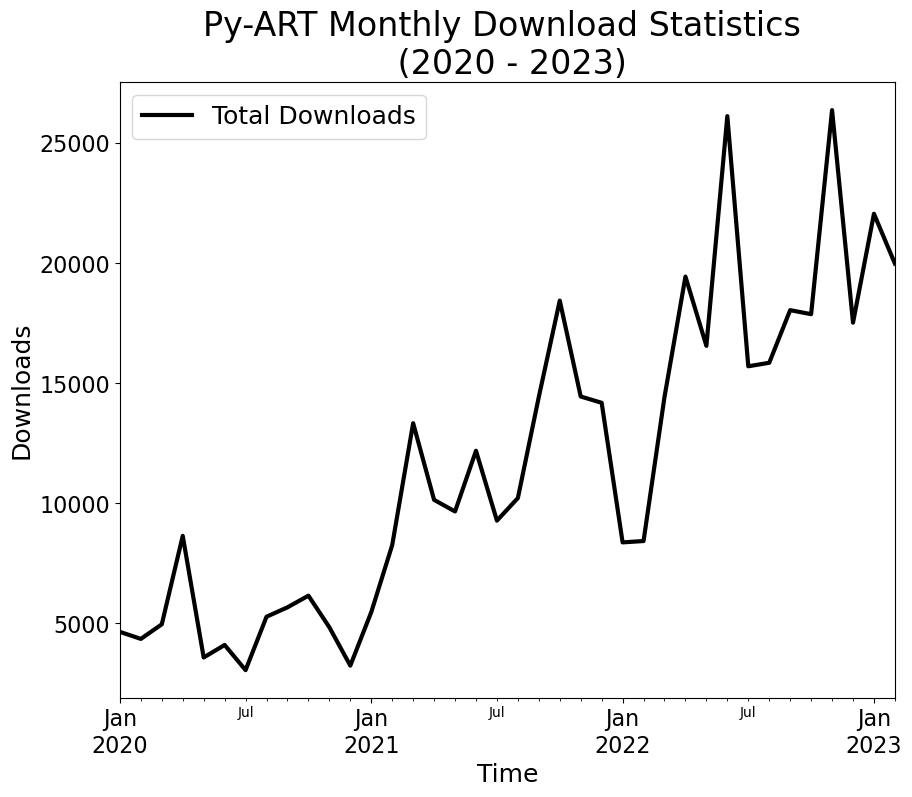
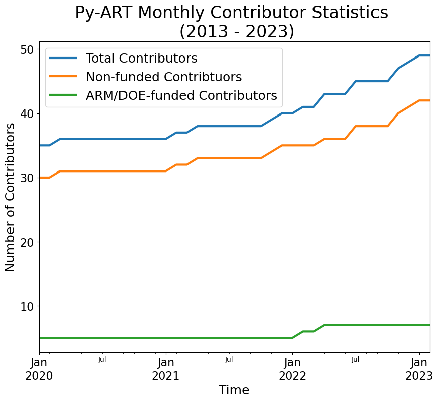

Plot the Download and Contributor Statistics#
Imports#
from condastats.cli import overall, pkg_platform, pkg_version, pkg_python, data_source
import s3fs
import pandas as pd
import matplotlib.pyplot as plt
Download Stats for Py-ART#
Conda#
df = overall('arm_pyart',
start_month='2020-01',
end_month='2023-02',
monthly=True)['arm_pyart']
Cleanup the Data#
df.index = pd.to_datetime(df.index)
conda_downloads = df
PyPi#
pypi = pd.read_csv("../data/pypi_stats.csv",
parse_dates=True,
index_col='month')
pypi_downloads = pypi["arm-pyart"]
Visualize the Results#
fig = plt.figure(figsize=(10,8))
(pypi_downloads + conda_downloads).plot(linewidth=3, color='black', label='Total Downloads')
#conda_downloads.plot(linewidth=3, label='conda downloads')
plt.legend(fontsize=18)
plt.xticks(fontsize=16)
plt.yticks(fontsize=16)
plt.xlabel("Time", fontsize=18)
plt.ylabel("Downloads", fontsize=18)
plt.title("Py-ART Monthly Download Statistics \n (2020 - 2023)",
fontsize=24);
plt.savefig("monthly_download_stats_through_february_2023.png", dpi=300, transparent=False, facecolor='white')

Commit History#
df = pd.read_csv("../data/github_commits.csv",
index_col='date',
parse_dates=True)
INTERNAL_AUTHORS = set(['zssherman',
'rcjackson',
'scollis',
'mgrover1',
'jhemedin',
'AdamTheisen',
'jrobrien91'])
def get_commits_data():
def author_type(author):
if author in INTERNAL_AUTHORS:
return 'Internal'
elif '[bot]' in str(author):
return None
else:
return 'External'
df = pd.read_csv('../data/github_commits.csv', index_col='date', parse_dates=True) \
.sort_index() \
.tz_localize(None)
df['changes'] = df.additions + df.deletions
df['author_type'] = df.author.apply(author_type)
df = df.drop(columns=['additions', 'deletions'])
return df
df = get_commits_data()
df = df[df.index > datetime(2020, 1, 1)]
df_c = df
df['date'] = pd.to_datetime(df.index)
df = df.loc[df.package == 'pyart']
df.groupby([df['date'].dt.year, 'author']).count()
| package | changes | author_type | date | ||
|---|---|---|---|---|---|
| date | author | ||||
| 2012 | scollis | 124 | 124 | 124 | 124 |
| 2013 | jjhelmus | 353 | 353 | 353 | 353 |
| josephhardinee | 10 | 10 | 10 | 10 | |
| kirknorth | 1 | 1 | 1 | 1 | |
| kmuehlbauer | 5 | 5 | 5 | 5 | |
| scollis | 87 | 87 | 87 | 87 | |
| vanandel | 2 | 2 | 2 | 2 | |
| 2014 | codypiersall | 1 | 1 | 1 | 1 |
| jjhelmus | 186 | 186 | 186 | 186 | |
| josephhardinee | 3 | 3 | 3 | 3 | |
| kirknorth | 22 | 22 | 22 | 22 | |
| scollis | 13 | 13 | 13 | 13 | |
| 2015 | WeatherGod | 1 | 1 | 1 | 1 |
| deeplycloudy | 3 | 3 | 3 | 3 | |
| gamaanderson | 38 | 38 | 38 | 38 | |
| jjhelmus | 576 | 576 | 576 | 576 | |
| josephhardinee | 4 | 4 | 4 | 4 | |
| kirknorth | 10 | 10 | 10 | 10 | |
| nguy | 7 | 7 | 7 | 7 | |
| scollis | 15 | 15 | 15 | 15 | |
| swnesbitt | 1 | 1 | 1 | 1 | |
| tjlang | 5 | 5 | 5 | 5 | |
| 2016 | TulipaSilva | 2 | 2 | 2 | 2 |
| jjhelmus | 315 | 315 | 315 | 315 | |
| jsignell | 8 | 8 | 8 | 8 | |
| kirknorth | 19 | 19 | 19 | 19 | |
| kmuehlbauer | 5 | 5 | 5 | 5 | |
| mrugna | 2 | 2 | 2 | 2 | |
| nguy | 17 | 17 | 17 | 17 | |
| normbw | 1 | 1 | 1 | 1 | |
| scollis | 24 | 24 | 24 | 24 | |
| swnesbitt | 8 | 8 | 8 | 8 | |
| tjlang | 13 | 13 | 13 | 13 | |
| 2017 | freemansw1 | 4 | 4 | 4 | 4 |
| jjhelmus | 21 | 21 | 21 | 21 | |
| rcjackson | 11 | 11 | 11 | 11 | |
| scollis | 17 | 17 | 17 | 17 | |
| swnesbitt | 1 | 1 | 1 | 1 | |
| tjlang | 10 | 10 | 10 | 10 | |
| vlouf | 7 | 7 | 7 | 7 | |
| zssherman | 11 | 11 | 11 | 11 | |
| 2018 | Striges | 1 | 1 | 1 | 1 |
| csnardi | 1 | 1 | 1 | 1 | |
| es5nhc | 1 | 1 | 1 | 1 | |
| gamaanderson | 2 | 2 | 2 | 2 | |
| jhemedin | 13 | 13 | 13 | 13 | |
| juhi24 | 1 | 1 | 1 | 1 | |
| kmuehlbauer | 2 | 2 | 2 | 2 | |
| mhpicel | 1 | 1 | 1 | 1 | |
| nguy | 1 | 1 | 1 | 1 | |
| rcjackson | 23 | 23 | 23 | 23 | |
| rtanamachi | 2 | 2 | 2 | 2 | |
| scollis | 76 | 76 | 76 | 76 | |
| tjlang | 3 | 3 | 3 | 3 | |
| vlouf | 3 | 3 | 3 | 3 | |
| wave100 | 4 | 4 | 4 | 4 | |
| zssherman | 101 | 101 | 101 | 101 | |
| zxdawn | 1 | 1 | 1 | 1 | |
| 2019 | AdamTheisen | 1 | 1 | 1 | 1 |
| dstex | 1 | 1 | 1 | 1 | |
| jhemedin | 16 | 16 | 16 | 16 | |
| meteoswiss-mdr | 1 | 1 | 1 | 1 | |
| nguy | 1 | 1 | 1 | 1 | |
| rcjackson | 6 | 6 | 6 | 6 | |
| scollis | 22 | 22 | 22 | 22 | |
| tjlang | 2 | 2 | 2 | 2 | |
| zssherman | 92 | 92 | 92 | 92 | |
| 2020 | AdamTheisen | 2 | 2 | 2 | 2 |
| dcedgren | 14 | 14 | 14 | 14 | |
| rcjackson | 6 | 6 | 6 | 6 | |
| rtanamachi | 2 | 2 | 2 | 2 | |
| scollis | 3 | 3 | 3 | 3 | |
| vlouf | 4 | 4 | 4 | 4 | |
| zflamig | 1 | 1 | 1 | 1 | |
| zssherman | 129 | 129 | 129 | 129 | |
| 2021 | HumphreysCarter | 4 | 4 | 4 | 4 |
| Quba1 | 6 | 6 | 6 | 6 | |
| lauratomkins | 1 | 1 | 1 | 1 | |
| ritvje | 2 | 2 | 2 | 2 | |
| zssherman | 59 | 59 | 59 | 59 | |
| 2022 | dopplerchase | 2 | 2 | 2 | 2 |
| jfigui | 1 | 1 | 1 | 1 | |
| jrobrien91 | 6 | 6 | 6 | 6 | |
| jthielen | 1 | 1 | 1 | 1 | |
| kmuehlbauer | 2 | 2 | 2 | 2 | |
| lauratomkins | 11 | 11 | 11 | 11 | |
| mgrover1 | 143 | 143 | 143 | 143 | |
| nguy | 1 | 1 | 1 | 1 | |
| rcjackson | 6 | 6 | 6 | 6 | |
| rtanamachi | 1 | 1 | 1 | 1 | |
| wolfidan | 3 | 3 | 3 | 3 | |
| wx4stg | 2 | 2 | 2 | 2 | |
| zouihao | 1 | 1 | 1 | 1 | |
| zssherman | 76 | 76 | 76 | 76 | |
| 2023 | jrobrien91 | 2 | 2 | 2 | 2 |
| mgrover1 | 7 | 7 | 7 | 7 | |
| neutrinoceros | 1 | 1 | 1 | 1 | |
| zssherman | 2 | 2 | 2 | 2 |
idx = pd.MultiIndex.from_product([
pd.period_range(start=df_c.index.min(), end=df_c.index.max(), freq='M'),
df_c.package.unique(),
df_c.author_type.unique(),
], names=['month', 'package', 'author_type'])
idx = idx[353:]
def cumsum_unique_authors(data):
data['authors'] = data['authors'].cumsum().map(set).map(len)
return data
def make_contributor_images(df_c: pd.DataFrame):
df_c = df_c.drop(columns='changes').dropna()
idx = pd.MultiIndex.from_product([
pd.period_range(start=df_c.index.min(), end=df_c.index.max(), freq='M'),
df_c.package.unique(),
df_c.author_type.unique(),
], names=['month', 'package', 'author_type'])
df_c = df_c.groupby([df_c.index.to_period('M'), 'package', 'author_type']) \
.agg(list) \
.rename(columns={'author': 'authors'}) \
.reindex(idx, fill_value=[]) \
.reset_index(['package', 'author_type']) \
.groupby(['package', 'author_type']) \
.apply(cumsum_unique_authors)
for pkg in df_c.package.unique():
df = df_c.loc[df_c.package == pkg] \
.drop(columns='package') \
.reset_index() \
.pivot(index='month', columns='author_type', values='authors') \
.astype('int64')
filename = f'images/metrics/{pkg}-contributors.html'
title = 'Number of Contributors'
# _make_stacked_bar_plot(df, filename, title, 'Contributors')
/var/folders/bw/c9j8z20x45s2y20vv6528qjc0000gq/T/ipykernel_12775/4001969942.py:19: FutureWarning: Not prepending group keys to the result index of transform-like apply. In the future, the group keys will be included in the index, regardless of whether the applied function returns a like-indexed object.
To preserve the previous behavior, use
>>> .groupby(..., group_keys=False)
To adopt the future behavior and silence this warning, use
>>> .groupby(..., group_keys=True)
.apply(cumsum_unique_authors)
df = df.iloc[88:]
Visualize the Data#
fig = plt.figure(figsize=(10,8))
(df.Internal + df.External).plot.line(linewidth=3,
label='Total Contributors')
df.External.plot.line(linewidth=3,
label='Non-funded Contribtuors')
df.Internal.plot.line(linewidth=3,
label='ARM/DOE-funded Contributors')
plt.legend(fontsize=18)
plt.xticks(fontsize=16)
plt.yticks(fontsize=16)
plt.xlabel("Time", fontsize=18)
plt.ylabel("Number of Contributors", fontsize=18)
plt.title("Py-ART Monthly Contributor Statistics \n (2013 - 2023)",
fontsize=24);
plt.legend(fontsize=18)
plt.savefig("monthly_contributor_stats_through_january_2023.png",
dpi=300,
transparent=False,
facecolor='white');
